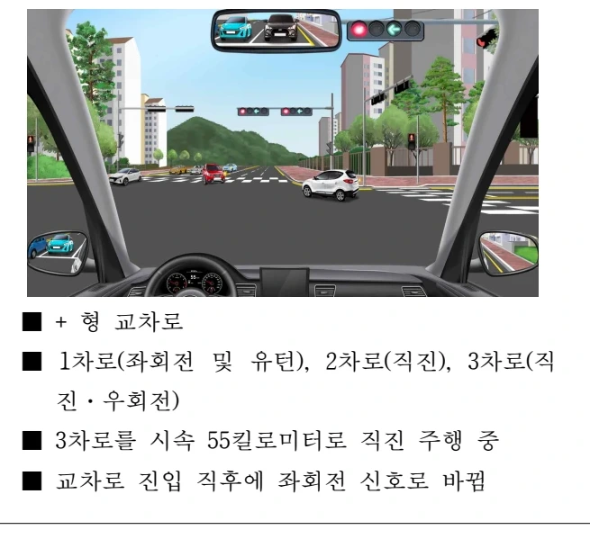

795. Hai yếu tố nào là nguy hiểm nhất trong tình huống trên đường sau?

- ①Có thể va chạm với xe đang rẽ trái nhanh từ làn đường số 1 theo hướng đang chạy.
- ②Có thể va chạm với xe đang rẽ phải từ đường bên phải.
- ③Có thể va chạm với xe đang rẽ phải từ đường đối diện.
- ④Có thể va chạm với xe đang quay đầu từ đường đối diện.
- ⑤Có thể va chạm với xe đang định rẽ phải từ phía sau ở làn đường số 3 theo hướng đang chạy.
Xem đáp án
Đáp án
② Có thể va chạm với xe đang rẽ phải từ đường bên phải.
④ Có thể va chạm với xe đang quay đầu từ đường đối diện.
Căn cứ
Khi tín hiệu chuyển sang màu vàng hoặc đỏ, tài xế tăng tốc độ để nhanh chóng ra khỏi giao lộ. Lúc này có khả năng xảy ra tai nạn do ô tô rẽ phải không hợp lý ở phần đường bên phải. Cũng có thể va chạm với xe đối diện vào giao lộ sớm vì đoán tín hiệu rẽ trái sắp bật, xe rẽ trái khởi hành đột ngột khi tín hiệu đổi, hoặc xe đang quay đầu phía đối diện. Xe đi thẳng ngược đèn có thể không nhìn thấy xe quay đầu vì bị xe rẽ trái trên đường đối diện che khuất, và ngược lại, xe quay đầu có thể không nhìn thấy xe đi thẳng vi phạm đèn tín hiệu do bị xe rẽ trái che khuất dẫn đến tai nạn. Vì vậy, việc tuân thủ tín hiệu tại các giao lộ là điều cần thiết để lái xe an toàn.
Phần căn cứ là bản dịch máy để tham khảo.